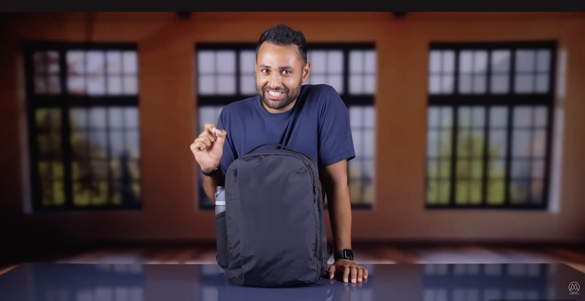
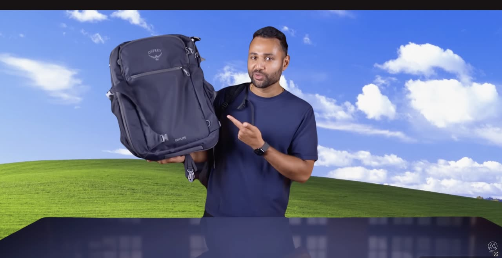
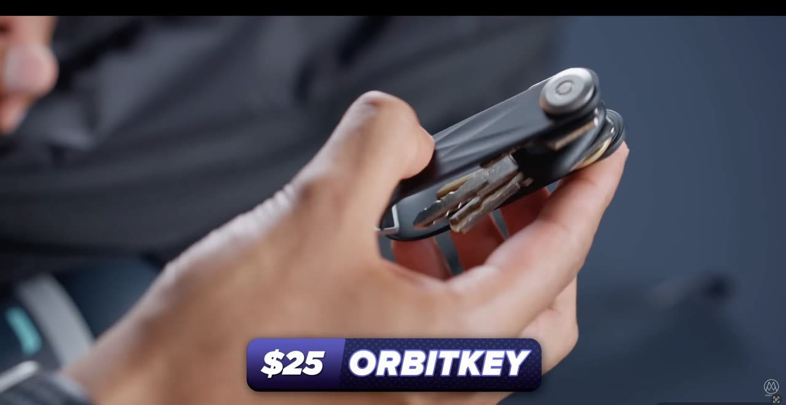
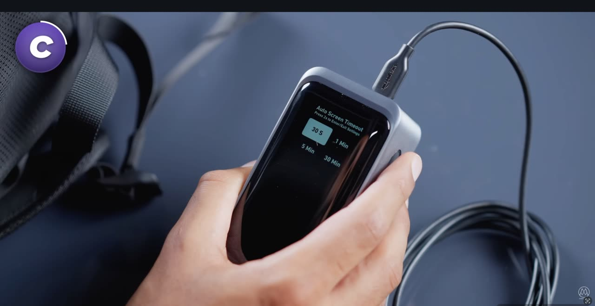

With over 22.5 million subscribers and a single video on Everyday Tech You'll Actually Use pulling in 6.2 million views in less than a year, the YouTube channel Mrwhosetheboss has become one of the most influential voices in consumer technology criticism.[1] The channel is hosted by Arun Maini, a British creator who has built his career around translating dense product specifications into approachable and opinionated reviews. His success matters because YouTube has displaced traditional outlets as the primary place where young consumers research their next purchase. Behind every smooth pan across a backpack and every smiling close-up there is a deliberate set of visual choices. Those choices form the subject of this essay.
The challenge for any tech YouTuber in 2026 is differentiation. Marques Brownlee, Linus Sebastian, and Arun Maini all review similar phones, headphones, and laptops, and viewers can stream any of them on demand. Burgess and Green argue in their landmark study of the platform that YouTube success depends far less on the raw content uploaded than on the cultural and aesthetic practices that surround it.[2] Hosts construct credibility, scenes construct mood, and editing constructs narrative momentum. Understanding how one specific channel builds those layers offers a useful model for analyzing the entire genre.
This essay analyzes the visual meaning-making practices of the Mrwhosetheboss YouTube channel through three overlapping frameworks. The first comes from classical film theory and examines mise-en-scène, montage, and on-screen metrics as the building blocks of any moving image text.[3] The second is Daniel Chandler's distinction between denotation and connotation, which separates what an image literally shows from what it culturally suggests.[4] The third is the classical rhetorical triad of ethos, pathos, and logos drawn from Aristotle's foundational treatise on rhetoric.[5] These three lenses are layered onto the model Pennings proposes for studying YouTube meaning-creating (and money-making) practices, which treats every channel as a coordinated system of signifying choices rather than as raw content.[6] Together these frameworks show that Mrwhosetheboss succeeds because every shot, cut, and on-screen number works to construct one coherent identity, that of a trustworthy and youthful technology expert.
The Host as Anchor
Stuart Hall argued that visual media require a figure who fixes meaning and prevents an audience from drifting toward unwanted interpretations.[7] On the news this figure is the anchor, and on a YouTube tech channel the equivalent figure is the host. Pennings makes this parallel explicit, observing that the host of a channel narrates the story in much the same way a news anchor does.[8] Arun Maini fills that role on Mrwhosetheboss with a calm voice-over, direct address to camera, and an almost conversational presence. He almost never raises his voice, yet he speaks with the assurance of someone who has handled the device in his hand for weeks. That steady tone is the first anchor of the channel's meaning.
Denotatively, Maini is a young South Asian British man in a plain navy shirt who holds a black backpack and smiles at the camera. Connotatively, those simple choices signal something much larger. The lack of branded clothing connotes independence from sponsors, the casual fit connotes accessibility rather than corporate gravitas, and the youthful face connotes that the channel speaks the language of its core under-thirty audience. Chandler's framework reminds us that none of these meanings are accidental, since costume and composition operate together as a sign system.[4] The host is therefore not just a person but a carefully composed signifier of approachable expertise.
The rhetorical function of this construction is to build ethos, which Aristotle identified as the appeal grounded in the credibility of the speaker. Maini reinforces his ethos in three ways. He discloses sponsorships openly inside his videos, as he does when he names Saily and offers a discount code in the video description.[1] He also handles devices with a confident familiarity that connotes technical literacy. He frequently revisits products months later to report whether his initial recommendations have aged well. These habits convert the host from a presenter into a perceived friend whose advice is worth trusting.
Mise-en-Scène and the Composition of Authority
The mise-en-scène of a Mrwhosetheboss video is unusually controlled for a personality-driven YouTube channel. The thumbnail from Everyday Tech You'll Actually Use places Maini centered between two large stained-glass church-style windows that fill the background with warm orange tones.[1] The composition is symmetrical, the host occupies the upper third of the frame, and the product he is reviewing sits dead center where the eye naturally lands. This careful staging echoes the symmetrical compositions that Bordwell and Thompson identify as a recurring signature of auteur filmmaking, including the work of Wes Anderson.[3] The result is that even a backpack feels worthy of cinematic attention.
Lighting is equally deliberate. Maini is lit by a soft key light from the front and a warmer rim light from behind, a pattern that flatters skin and separates the host from the dark background. The cool blue of his shirt contrasts with the warm orange of the windows, creating the kind of complementary color scheme often used in feature film posters. His smartwatch, visible on his left wrist, doubles as both a personal item and a subtle product placement that reinforces the technology theme. None of these elements feels staged in a forced way, yet every one of them has been planned. The denotation is a man holding a bag, but the connotation is a curator displaying an object of value.
This visual control serves pathos, the rhetorical appeal to emotion. The warm tones, the symmetrical framing, and the gentle smile work together to produce a feeling of safety and aspiration rather than aggression or pressure. Henry Jenkins describes the resulting digital media environment as one driven by affective economics, in which feelings are monetized as effectively as facts, and Mrwhosetheboss is a textbook example of that logic.[9] Viewers are not told they should desire a premium carry-on backpack, they are simply shown one in a way that makes desire feel natural. The bag is staged the way a wedding ring is staged in a jewelry advertisement, isolated, lit, and held with care.
Montage and the Rhythm of Meaning
Beyond individual shots, the channel constructs meaning through montage, which Sergei Eisenstein theorized as the editing process that builds rhythm, contrast, and ideological meaning through the deliberate collision of shots.[10] A typical Mrwhosetheboss video cuts roughly every two to four seconds, far faster than traditional television news yet slower than the frantic pace of TikTok. That middle pace lets a viewer absorb a feature before the next one appears. Cross-cutting between a wide shot of the host and a tight macro shot of the product is the channel's defining rhythm. The macro shots function as indices that point to specific features, while the host shots function as anchors that fix the interpretation.
The channel also uses what Lev Kuleshov demonstrated a century ago, that meaning is constructed between shots rather than within them.[11] When a clip of Maini smiling is placed immediately after a shot of a sleek charging brick, the smile reads as approval. When the same smile follows a clip of a cheap looking dongle, the smile reads as ironic or doubtful. Mrwhosetheboss exploits this principle by carefully ordering shots so that the host's reactions guide the viewer's verdict. The technique is invisible to most viewers, which is precisely what makes it persuasive.
A third element of the channel's montage is its frequent on-screen integration of metrics and graphics. Bar charts comparing battery life, animated percentage figures showing weight savings, and floating product names all overlay the host shots without interrupting them. These graphics serve the logos appeal, the rhetorical mode that Aristotle defined as the use of reason and evidence to persuade an audience.[5] The video on Everyday Tech You'll Actually Use earned 6.2 million views and 146,000 likes in under a year, which is itself a logos-style metric of the channel's authority.[1] Numbers function on this channel the way van Dijck argues they function across social media generally, as both content and proof of authority.[12]
Shot Grammar at Specific Timestamps
The three frameworks above describe the channel at the level of overall style. A second pass at the level of individual shots makes the engineering even more visible. Daniel Chandler's The 'Grammar' of Television and Film catalogues the conventions of distance, angle, movement, and editing that audiovisual media inherit from classical cinema.[14] The six panels below pair a frame from Everyday Tech You'll Actually Use with the Chandler grammar at work. Click any timecode to jump straight to that moment in the embedded video. The fifth panel, on tracking, plays its seven seconds in real time.

Talk to Camera · Mise-en-Scène
Host, product, and the church windows that brand the channel.
Chandler reserves direct talk-to-camera for figures whose expert status the audience accepts, such as anchors and presenters. The camera sits at eye level, the convention for factual programming. Within three seconds the channel commits two grammar choices that ratify Maini as expert, while the flanking stained-glass windows do the rest of the work, framing an $80 backpack as if it deserved a cathedral.
Title Graphic · Animation
The numbered four-chapter index.
Chandler groups text, graphics, and animation together as conventions of news, documentary, and educational programming. Mrwhosetheboss borrows that vocabulary openly: a numbered 1-2-3-4 title card promises a structure before the host even returns, and the floating Dark Mode switch teaches the viewer to expect a comparison between two states. The graphic does what the voice-over alone never quite can, which is to sign a documentary contract with the audience.

Process Shot · Intertextuality
The Osprey Daylite against Windows XP's Bliss.
Chandler defines a process shot as action filmed in front of a rear-projected background. Mrwhosetheboss substitutes a green-screen composite but the convention is identical. Replacing the warehouse set with the Windows XP Bliss wallpaper invokes Chandler's idea of intertextuality, the way meaning crosses media. Viewers who grew up with that desktop read the bag as both new and known, and the joke does the persuasion the voice-over does not need to.

Big Close-Up · Graphic Overlay
An Orbitkey, abstracted from its room and price-tagged.
Chandler defines the insert as a bridging close-up that supplies an essential detail, and the BCU as a shot that abstracts the subject from its context. The Orbitkey shot does both, then layers a lower-third graphic that turns the close-up into something halfway between editorial and television commercial. Logos by demonstration and logos by number meet in a single frame.
Tracking · Dolly-In
The chair that slides toward the host.
Chandler describes tracking as the camera being moved smoothly toward or away from the subject, and notes that tracking in draws the viewer into a closer, more intense relationship with the subject. Mrwhosetheboss inverts the technique by holding the camera still and motorising the object instead, yet the meaning reads identically. The slow, smooth approach gives the product presence, and the polish itself becomes part of the channel's argument for its own authority.

Selective Focus · Insert
A power bank menu, while the bag dissolves into blur.
Chandler defines selective focus as rendering only part of the action field in sharp focus through a shallow depth of field. The bag webbing behind the device is dissolved into navy bokeh on purpose, so the timeout menu, the evidence the host wants the viewer to read, sits in sharpness alone. The insert shot has been weaponised: the viewer is told exactly where to look and told to read what they see there as fact.
Conclusion
The Mrwhosetheboss channel is not popular by accident. Its 22.5 million subscribers reflect a tightly integrated system of meaning-making in which the host, the scene, and the cut all reinforce one identity. Arun Maini anchors the narrative as a calm and approachable expert. The mise-en-scène stages each product as cinematically worthy. The montage uses pace, juxtaposition, and on-screen graphics to convert opinion into apparent evidence. Read together through these frameworks of film theory, semiotics, and rhetoric, the channel exemplifies how online creators borrow the visual grammar of classical Hollywood to engineer the kind of trust that drives subscription and sale.[2]
Pennings recommends that any serious analysis of a YouTube channel begin with the host and proceed through scene construction and editing rhythm to the on-screen graphics, and the foregoing analysis has followed that sequence on Mrwhosetheboss.[13] The broader lesson reaches past one tech reviewer. Every successful YouTube channel constructs meaning through the same visual grammar that classical Hollywood used a century ago, only adapted for vertical phones and short attention spans. Understanding that grammar gives students a tool to analyze any channel critically, to recognize when a video is informing them and when it is selling to them, and possibly to produce their own work with the same level of intentionality. Mrwhosetheboss is one channel among many, yet it offers a particularly clear window onto how trust is engineered on the modern video web. For viewers, that visibility is the first defense against being persuaded without knowing it.
References
The bracketed numbers in the body of the essay point to the entries below. Click any number in the text to jump to its source.
- Maini, A. [Mrwhosetheboss]. (2025, May 28). Everyday tech you'll actually use [Video]. YouTube. https://youtu.be/Ad3HP6iRyUE
- Burgess, J., & Green, J. (2018). YouTube: Online video and participatory culture (2nd ed.). Polity Press.
- Bordwell, D., & Thompson, K. (2019). Film art: An introduction (12th ed.). McGraw-Hill.
- Chandler, D. (2021, November 23). Semiotics for beginners: Signs. Aberystwyth University. http://visual-memory.co.uk/daniel/Documents/S4B/sem02.html
- Aristotle. (2007). On rhetoric: A theory of civic discourse (G. A. Kennedy, Trans., 2nd ed.). Oxford University Press. (Original work published ca. 350 B.C.E.)
- Pennings, A. J. (2020, February 2). YouTube meaning-creating (and money-making) practices. apennings.com. https://apennings.com/media-strategies/youtube-meaning-creating-practices/
- Hall, S. (1997). Representation and the media [Video transcript]. Media Education Foundation. mediaed.org
- Pennings, A. J. (2025, May 1). Visual rhetoric analysis of social media: YouTube channels, hosts, logos, and the 3Ms. apennings.com. https://apennings.com/technologies-of-meaning/visual-rhetoric-analysis-of-a-youtube-channel/
- Jenkins, H. (2006). Convergence culture: Where old and new media collide. New York University Press.
- Eisenstein, S. (1949). Film form: Essays in film theory (J. Leyda, Ed. & Trans.). Harcourt, Brace & World.
- Kuleshov, L. (1974). Kuleshov on film: Writings of Lev Kuleshov (R. Levaco, Ed. & Trans.). University of California Press.
- van Dijck, J. (2013). The culture of connectivity: A critical history of social media. Oxford University Press.
- Pennings, A. J. (2022, May 2). Analyzing YouTube channels. apennings.com. https://apennings.com/media-strategies/analyzing-youtube-channels/
- Chandler, D. (2001). The 'grammar' of television and film. Aberystwyth University. http://visual-memory.co.uk/daniel/Documents/short/gramtv.html